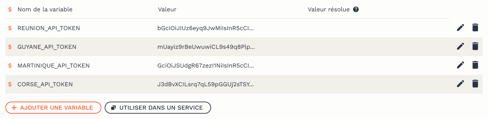

Gestion des secrets
Les variables d’environnement;
Il arrive que certaines informations doivent être mise à disposition d’un grand nombre d’applications, ou ne doivent pas figurer en clair dans votre code (jetons d’accès, mots de passe, etc.). L’utilisation de variables d’environnement permet de pouvoir accéder à ces informations depuis n’importe quel service.
Au lancement d’un service, plusieurs variables d’environnement sont déjà injectées automatiquement — par exemple, les tokens d’accès à ``

Création et gestion de secrets
Sur la plateforme, les variables d’environnement sont des secrets écrits dans Vault (le coffre fort du Datalab) et sont chiffrées. Cela vous permet d’y stocker des jetons, des identifiants et des mots de passe. La page Mes secrets prends la forme d’un explorateur de fichiers où vous pouvez trier et hiérarchiser vos variables dans des dossiers.
Pour commencer :
- Créez un nouveau dossier
+ Nouveau dossier - Puis dans ce dossier, créez un nouveau secret
+ Nouveau secret - Ouvrez votre secret

Chaque secret peut contenir plusieurs variables, composés de paires de clés-valeurs.
+ Ajouter une variable

Les clés (nom de la variable) commencent toujours par$et contiennent uniquement des lettres, des chiffres et le caractère de soulignement (_). Par convention, les clefs s’écrivent en MAJUSCULE.
Remplissez le champ du nom de la clef puis sa valeur.
Convertir des secrets en variables d’environnement
Une fois votre secret édité, avec ses différentes variables, vous êtes prêt à l’utiliser dans votre service.
- Copiez le chemin du secret en cliquant sur le bouton
Utiliser dans un service - Puis au moment de la configuration de votre service, allez dans l’onglet
Vaultet collez le chemin du secret dans le champ dédié

- Créez et ouvrez votre service
Pour vérifier que vos variables d’environnement ont bien été crées, vous pouvez lancer les commandes suivantes dans le terminal du service :
# Lister toutes les variables d'environnement disponibles
env
# Afficher la valeur d'une variable d'environnement
echo $MA_VARIABLE
# Trouver toutes les variables d'environnement qui contiennent un pattern donné
env | grep -i "<PATTERN>"